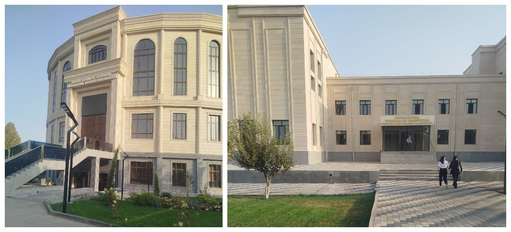

Fakultet haqida umumiy ma’lumot Bu fakultet — SamDU tarkibidagi Intellektual tizimlar va kompyuter texnologiyalari fakulteti bo‘lib, u asosan IT, sun’iy intellekt, dasturlash va kompyuter texnologiyalari yo‘nalishlari bo‘yicha mutaxassislar tayyorlaydi. Samarqand Davlat Universiteti Fakultetda: zamonaviy laboratoriyalar mavjud talabalar amaliy kod yozish mashg‘ulotlarini o‘tadi IT markaz faol (talabalarni dasturlash va startap loyihalariga yo‘naltirish) Samarqand Davlat Universiteti Manzil: Universitet xiyoboni, 15-uy, Samarqand Samarqand Davlat Universiteti